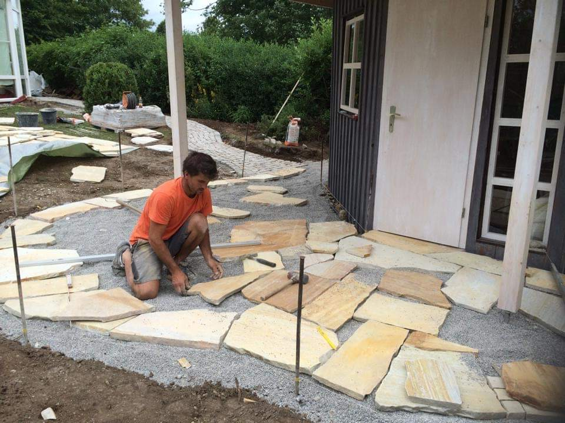

Vier Schritte bis zum fertigen Garten.
Erst schauen wir uns alles bei Ihnen an. So wissen Sie vorher, was es kostet. Und wir wissen genau, was Ihr Garten braucht.
So läuft es ab.
Vier Schritte, keine Überraschungen. Der Termin vor Ort ist kostenlos.
Anfragen
Projekt-Planer ausfüllen, anrufen oder eine E-Mail schreiben.
- kostenlos
Termin vor Ort
Herr Sopa kommt zu Ihnen und bespricht Ihre Vorstellungen direkt auf dem Grundstück.
Kostenvoranschlag
Sie bekommen schriftlich, was gemacht wird und was es kostet.
Bauen
Zügig und sauber. Material, das übrig bleibt, nehmen wir mit.
Was in jedem Schritt passiert.
Sie fragen an.
Erzählen Sie uns, was Sie vorhaben. Am schnellsten geht das am Telefon. Sie können auch eine E-Mail schreiben oder den Projekt-Planer nutzen. Dort klicken Sie in einer Minute zusammen, was gebaut werden soll, und schicken es ab.
- Telefon: 0174 9597342
- E-Mail: sopa-muharem@gmx.de
- Online: Projekt-Planer, in einer Minute ausgefüllt
Herr Sopa kommt zu Ihnen.
Er schaut sich das Grundstück an. Sie zeigen ihm, was Sie sich vorstellen, und er sagt Ihnen, was geht und worauf es ankommt. Auf Wunsch bringt er Steinmuster mit. Der Termin ist kostenlos und unverbindlich.
- Kostenlos und unverbindlich
- Beratung zu Stein, Muster und Aufbau
- Fragen klären, bevor etwas feststeht
Sie bekommen einen Kostenvoranschlag.
Danach bekommen Sie schriftlich, was gemacht wird und was es kostet. So können Sie in Ruhe entscheiden. Erst wenn Sie zustimmen, geht es los.
- Schriftlich, damit Sie es in Ruhe lesen können
- Erst Ihre Zusage, dann der Bau
Wir bauen.
Zügig und sauber. Vom Aushub über den Unterbau bis zum letzten Stein bleibt alles in einer Hand. Material, das übrig bleibt, nehmen wir mit, genauso wie alten Belag und Aushub.
- Ein Ansprechpartner für alles
- Die Entsorgung übernehmen wir
- Fertig ist es erst, wenn Sie zufrieden sind
Was Kunden uns oft fragen.
Ihre Frage ist nicht dabei? Rufen Sie einfach an: 0174 9597342.
Kostet die Beratung etwas?
Nein. Der Termin vor Ort ist kostenlos und unverbindlich. Sie gehen damit keine Verpflichtung ein.
Für wen arbeiten Sie?
Für Privatleute mit eigenem Garten, für Wohnanlagen und für Gewerbe. Ob Hauseingang oder großer Hof: Erzählen Sie uns, was Sie vorhaben.
Bekomme ich vorher einen Preis?
Ja. Nach dem Termin vor Ort bekommen Sie einen schriftlichen Kostenvoranschlag. Darin steht, was gemacht wird und was es kostet. Gebaut wird erst, wenn Sie zugestimmt haben.
Was passiert mit dem alten Belag und dem Aushub?
Darum kümmern wir uns. Alter Belag, Erde und Steine, die übrig bleiben, nehmen wir mit und entsorgen sie.
Kann ich die Steine selbst aussuchen?
Ja, gern. Herr Sopa berät Sie bei der Steinwahl und bringt auf Wunsch Muster zum Termin mit. Wenn Sie schon einen Stein im Kopf haben, sagen Sie es einfach.
Wie erreiche ich Sie am schnellsten?
Am Telefon unter 0174 9597342. Sie können auch eine E-Mail an sopa-muharem@gmx.de schreiben. Über den Projekt-Planer geht Ihre Anfrage mit allen Angaben direkt an Herrn Sopa.
Was soll ich zum Termin vor Ort vorbereiten?
Nicht viel. Gut ist eine grobe Vorstellung, was gebaut werden soll. Fotos, Skizzen oder Bilder aus Zeitschriften helfen, sind aber kein Muss. Alles andere klären wir gemeinsam vor Ort.
Machen Sie alles selbst oder kommen mehrere Firmen?
Erd- und Baggerarbeiten, Pflaster, Mauern, Treppen, Terrassen, Bepflanzung, Zäune und Rasen machen wir selbst. Sie haben einen Ansprechpartner von der ersten Baggerschaufel bis zum letzten Stein.

Erzählen Sie uns von Ihrem Projekt.
Am schnellsten geht es am Telefon. Oder Sie planen Ihr Projekt in einer Minute, und Herr Sopa meldet sich bei Ihnen.